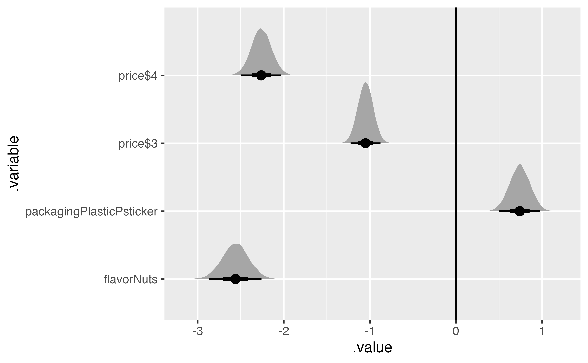
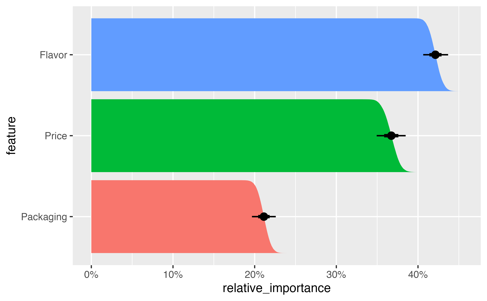

library(tidyverse)
library(brms)
library(rstan)
library(tidybayes)
library(ggdist)
library(marginaleffects)
library(parameters)
library(tinytable)
library(scales)
library(ggforce)
stickers <- readRDS("data/processed_data/study_5_sticker.rds")11 Utilities and predictions with Bayesian multinomial regression
stickers_choice_alt <- stickers |>
mutate(choice_alt = factor(alt * choice))
stickers_choice_alt |>
select(resp_id, question, price, packaging, flavor, choice, choice_alt)# A tibble: 7,080 × 7
resp_id question price packaging flavor choice choice_alt
<dbl> <dbl> <fct> <fct> <fct> <dbl> <fct>
1 4 1 $3 Plastic + sticker Chocolate 1 1
2 4 1 $2 Plastic + paper Nuts 0 0
3 4 2 $3 Plastic + sticker Nuts 0 0
4 4 2 $2 Plastic + paper Chocolate 1 2
5 4 3 $4 Plastic + paper Chocolate 1 1
6 4 3 $2 Plastic + sticker Chocolate 0 0
7 4 4 $2 Plastic + sticker Chocolate 1 1
8 4 4 $4 Plastic + paper Nuts 0 0
9 4 5 $4 Plastic + sticker Chocolate 1 1
10 4 5 $2 Plastic + paper Nuts 0 0
# ℹ 7,070 more rows11.1 Model
model_stickers_mega_mlm_brms <- brm(
bf(choice_alt ~
# Choice-level predictors that are nested within respondents...
(price + packaging + flavor) +
# ... with random respondent-specific slopes for the
# nested choice-level predictors
(1 + price + packaging + flavor | ID | resp_id)),
data = stickers_choice_alt,
family = categorical(refcat = "0"),
prior = c(
prior(normal(0, 3), class = b, dpar = mu1),
prior(normal(0, 3), class = b, dpar = mu2),
prior(exponential(1), class = sd, dpar = mu1),
prior(exponential(1), class = sd, dpar = mu2),
prior(lkj(1), class = cor)
),
chains = 4, cores = 4, warmup = 1000, iter = 5000, seed = 1234,
backend = "cmdstanr", threads = threading(2), # refresh = 0,
control = list(adapt_delta = 0.9),
file = "models/model_stickers_mega_mlm_brms"
)11.2 Part-worth utilities and ratios
11.2.1 Model βs
The coefficients from the model
stickers_cat_marginalized <- model_stickers_mega_mlm_brms %>%
gather_draws(`b_.*`, regex = TRUE) %>%
# Each variable name has "mu1", "mu2", etc. built in, like "b_mu1_flavorNuts". This
# splits the .variable column into two parts based on a regular expression,
# creating one column for the mu part ("b_mu1_") and one for the rest of the
# variable name ("flavorNuts")
separate_wider_regex(
.variable,
patterns = c(mu = "b_mu\\d_", .variable = ".*")
) %>%
# Find the average of the two mu estimates for each variable within each
# draw, or marginalize across the two options, since they're randomized
group_by(.variable, .draw, .chain, .iteration) %>%
summarize(.value = mean(.value)) `summarise()` has grouped output by '.variable', '.draw', '.chain'. You can override using the `.groups` argument.stickers_cat_marginalized |>
filter(.variable != "Intercept") |>
ggplot(aes(x = .value, y = .variable)) +
stat_halfeye() +
geom_vline(xintercept = 0)
stickers_cat_marginalized |>
group_by(.variable) |>
median_hdi(.value)# A tibble: 5 × 7
.variable .value .lower .upper .width .point .interval
<chr> <dbl> <dbl> <dbl> <dbl> <chr> <chr>
1 flavorNuts -2.56 -2.87 -2.26 0.95 median hdi
2 Intercept 1.25 1.01 1.49 0.95 median hdi
3 packagingPlasticPsticker 0.741 0.504 0.976 0.95 median hdi
4 price$3 -1.05 -1.23 -0.887 0.95 median hdi
5 price$4 -2.26 -2.49 -2.03 0.95 median hdi 11.2.2 Individual part-worths
population_effects <- stickers_cat_marginalized |>
rename(value_population = .value)
population_effects# A tibble: 80,000 × 5
# Groups: .variable, .draw, .chain [80,000]
.variable .draw .chain .iteration value_population
<chr> <int> <int> <int> <dbl>
1 Intercept 1 1 1 1.13
2 Intercept 2 1 2 1.47
3 Intercept 3 1 3 1.47
4 Intercept 4 1 4 1.40
5 Intercept 5 1 5 1.33
6 Intercept 6 1 6 1.35
7 Intercept 7 1 7 1.33
8 Intercept 8 1 8 1.18
9 Intercept 9 1 9 1.22
10 Intercept 10 1 10 1.17
# ℹ 79,990 more rowsindividual_effects <- model_stickers_mega_mlm_brms |>
gather_draws(`r_.*`[resp_id,term], regex = TRUE) |>
separate_wider_regex(
.variable,
patterns = c(mu = "r_resp_id__mu", .variable = "\\d")
) |>
group_by(resp_id, term, .chain, .iteration, .draw) |>
summarize(.value = mean(.value)) combined <- individual_effects |>
rename(.variable = term, value_individual = .value) |>
left_join(population_effects, by = join_by(.variable, .chain, .iteration, .draw)) |>
ungroup() |>
filter(.variable != "Intercept") |>
mutate(utility = value_individual + value_population)part_worths_posterior <- combined |>
group_by(resp_id, .variable) |>
mean_hdi(utility) |>
select(resp_id, .variable, utility) |>
bind_rows(expand_grid(
utility = 0,
.variable = c("flavorChocolate", "packagingPackagingPpaper", "price$2"),
resp_id = unique(combined$resp_id)
)) |>
mutate(feature = case_when(
str_starts(.variable, "price") ~ "Price",
str_starts(.variable, "packaging") ~ "Packaging",
str_starts(.variable, "flavor") ~ "Flavor"
)) |>
mutate(.variable = str_remove_all(.variable, "^price|^packaging|^flavor"))Individual utilty part-worths:
part_worths_posterior |>
pivot_wider(names_from = c(feature, .variable), values_from = utility) |>
slice(1:5) |>
select(
ID = resp_id, `$2` = `Price_$2`, `$3` = `Price_$3`, `$4` = `Price_$4`,
Paper = Packaging_PackagingPpaper, Sticker = Packaging_PlasticPsticker,
Chocolate = Flavor_Chocolate, Nuts = Flavor_Nuts
) |>
tt() |>
format_tt(j = 2:8, digits = 2, num_zero = TRUE, num_fmt = "significant") |>
group_tt(
j = list(
"Price" = 2:4,
"Packaging" = 5:6,
"Flavor" = 7:8
)
) |>
style_tt(
i = 1:5,
j = c(2, 5, 7), line = "l"
) |>
style_tt(
i = 1, background = "yellow"
)| Price | Packaging | Flavor | |||||
|---|---|---|---|---|---|---|---|
| ID | $2 | $3 | $4 | Paper | Sticker | Chocolate | Nuts |
| 4 | 0 | -0.82 | -1.6 | 0 | -1.66 | 0 | -4.109 |
| 5 | 0 | -1.42 | -3.3 | 0 | 0.27 | 0 | -0.074 |
| 6 | 0 | -0.90 | -1.9 | 0 | 1.18 | 0 | -3.275 |
| 7 | 0 | -1.00 | -1.6 | 0 | 1.20 | 0 | -3.641 |
| 8 | 0 | -0.84 | -1.6 | 0 | 2.36 | 0 | -3.557 |
For respondent 4, the difference in preference when moving from $2 to $4 is roughly the same as the preference for a sticker
We can also calculate the relative importance of each attribute for each individual by determining how much each attribute contributes to the overall utility of the choice. We first calculate the range of each
part_worths_posterior |>
filter(resp_id == 4) |>
arrange(.variable) |>
group_by(resp_id, feature) |>
summarize(
range_text = glue::glue("{round(max(utility), 2)} − {round(min(utility), 2)}"),
range = diff(range(utility))) |>
mutate(pct_importance = range / sum(range)) |>
ungroup() |>
arrange(desc(feature)) |>
janitor::adorn_totals() |>
tt() |>
format_tt(digits = 3, num_zero = TRUE, num_fmt = "significant") |>
format_tt(j = 5, fn = scales::label_percent(accuracy = 0.1))`summarise()` has grouped output by 'resp_id'. You can override using the `.groups` argument.| resp_id | feature | range_text | range | pct_importance |
|---|---|---|---|---|
| 4 | Price | 0 − -1.61 | 1.61 | 21.8% |
| 4 | Packaging | 0 − -1.66 | 1.66 | 22.5% |
| 4 | Flavor | 0 − -4.11 | 4.11 | 55.7% |
| Total | - | - | 7.37 | 100.0% |
pref_ranges_posterior <- combined |>
mutate(feature = case_when(
str_starts(.variable, "price") ~ "Price",
str_starts(.variable, "packaging") ~ "Packaging",
str_starts(.variable, "flavor") ~ "Flavor"
)) |>
mutate(.variable = str_remove_all(.variable, "^price|^packaging|^flavor")) |>
group_by(resp_id, feature, .draw) |>
summarize(range = diff(range(c(0, utility)))) |>
group_by(resp_id, .draw) |>
mutate(pct_importance = range / sum(range))asdf <- pref_ranges_posterior |>
group_by(resp_id, feature) |>
summarize(
range = mean(range),
relative_importance = mean(pct_importance)
) |>
filter(resp_id %in% 4:8) |>
pivot_wider(names_from = feature, values_from = c(range, relative_importance))`summarise()` has grouped output by 'resp_id'. You can override using the `.groups` argument.asdf |>
setNames(c("ID", "Flavor", "Packaging", "Price", "Flavor", "Packaging", "Price")) |>
tt() |>
format_tt(j = 2:4, digits = 2, num_zero = TRUE, num_fmt = "significant") |>
group_tt(
j = list(
"Range" = 2:4,
"Importance" = 5:7
)
) |>
style_tt(
i = 1:5,
j = c(2, 5), line = "l"
) |>
format_tt(j = 5:7, fn = scales::label_percent(accuracy = 0.1))| Range | Importance | |||||
|---|---|---|---|---|---|---|
| ID | Flavor | Packaging | Price | Flavor | Packaging | Price |
| 4 | 4.11 | 1.70 | 1.7 | 55.7% | 21.6% | 22.7% |
| 5 | 0.74 | 0.71 | 3.3 | 15.0% | 14.4% | 70.6% |
| 6 | 3.28 | 1.28 | 2.0 | 50.4% | 18.9% | 30.7% |
| 7 | 3.64 | 1.28 | 1.7 | 55.3% | 18.8% | 26.0% |
| 8 | 3.56 | 2.36 | 1.6 | 47.0% | 30.7% | 22.3% |
Finally, we can aggregate these individual importance ratios into overall averages:
pref_ranges_posterior |>
group_by(feature, .draw) |>
summarize(relative_importance = mean(pct_importance)) |>
median_hdi(relative_importance)`summarise()` has grouped output by 'feature'. You can override using the `.groups` argument.# A tibble: 3 × 7
feature relative_importance .lower .upper .width .point .interval
<chr> <dbl> <dbl> <dbl> <dbl> <chr> <chr>
1 Flavor 0.421 0.406 0.436 0.95 median hdi
2 Packaging 0.211 0.197 0.226 0.95 median hdi
3 Price 0.367 0.350 0.385 0.95 median hdi pref_ranges_posterior |>
group_by(feature, .draw) |>
summarize(relative_importance = mean(pct_importance)) |>
ungroup() |>
mutate(feature = fct_reorder(feature, relative_importance)) |>
ggplot(aes(x = relative_importance, y = feature)) +
stat_ccdfinterval(aes(fill = feature)) +
# stat_ccdfinterval(aes(fill = feature, slab_alpha = after_stat(f)),
# thickness = 1, fill_type = "gradient"
# ) +
expand_limits(x = 0) +
scale_x_continuous(labels = scales::label_percent()) +
guides(fill = "none")`summarise()` has grouped output by 'feature'. You can override using the `.groups` argument.